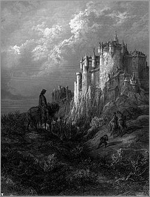

The mythology of King Arthur and his Knights of the Round table encompasses many stories. Below is a summary of one of the more famous tales, in which the magical scabbard of his sword is stolen.
The story begins with Arthur and his companions, the king Urien and the knight Accolon, on a hunt. As they head deeper into the woods, the three discover a ship floating on a body of water and decide to explore it. Inside, they are welcomed by a group of maidens who ask them to stay the night. Arthur and his companions are treated to a feast and shown to luxuriously furnished cabins. But in the morning, the three find themselves separated. Urien wakes up in a bedroom at Camelot. Arthur, however, finds himself imprisoned with several other knights.
The other captives explain that they have been captured by the evil Sir Damas, who plans to keep them locked up until one of them fights as his champion. Damas has taken over the castle and lands of his brother, Sir Outlake, and challenged him to a contest. Each of them will appoint a knight to fight in their place, and the noble represented by the winner will be declared rightful owner of the disputed territory. Arthur agrees to be Damas' champion, if the other knights will be released. Accolon finds himself in a similar situation.
He wakes up in a courtyard, and is met by a messenger sent by Morgan Le Fay. The messenger tells the knight that Morgan begs him to fight a mysterious knight for her sake, and that of Sir Outlake.Accolon agrees, as he is in love with the queen. The messenger offers him Excalibur and its magical scabbard, which will protect him from injury. In the meantime, Arthur has received an identical message. However, his sword and scabbard are fake. Morgan's plan is to have Accolon kill Arthur with the genuine weapon, and seize power for herself.
Accolon and Arthur meet in battle, neither aware of who he is actually fighting. Both of them are wearing armor with closed visors and no markings to signify their allegiance. At first, Accolon has the advantage. Wielding the true Excalibur, he cuts through Arthur's armor with ease. In contrast, the king can barely injure his opponent because of the scabbard's protection. However, help was at hand for Arthur. Nimue, one of his allies, is watching the duel, and she uses her magic to disarm Accolon. Arthur grabs Excalibur and uses it to defeat his rival. After he unmasks Sir Accolon, the two realize Morgan's plot.
Realizing they are in the presence of their king, Outlake and Damas are forced to end their feud. Arthur resolves to deal with his treacherous sister after his injuries have healed. Accolon, however, dies of his injuries. Worse still, Morgan is one step ahead of him. While he is sleeping and recovering, Morgan sneaks to his bedside and steals the magical scabbard. Arthur and Outlake chase her, but by the time they have caught up, she has thrown the scabbard into a lake. Moreover, the two are unable to find Morgan, who has used magic to conceal herself.
We'd like your opinion on this website! Please fill out the form below.